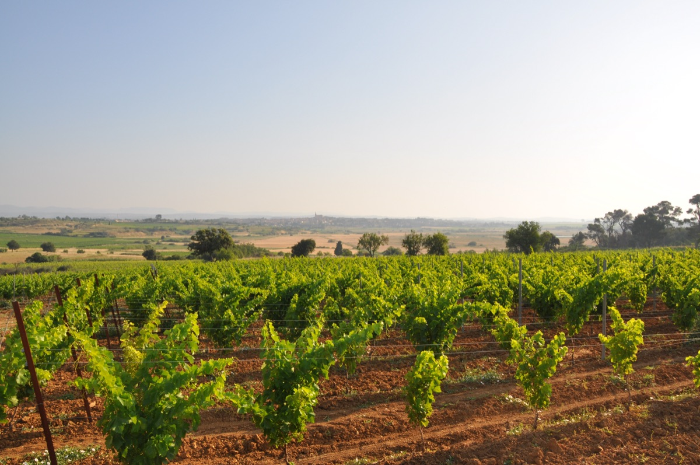
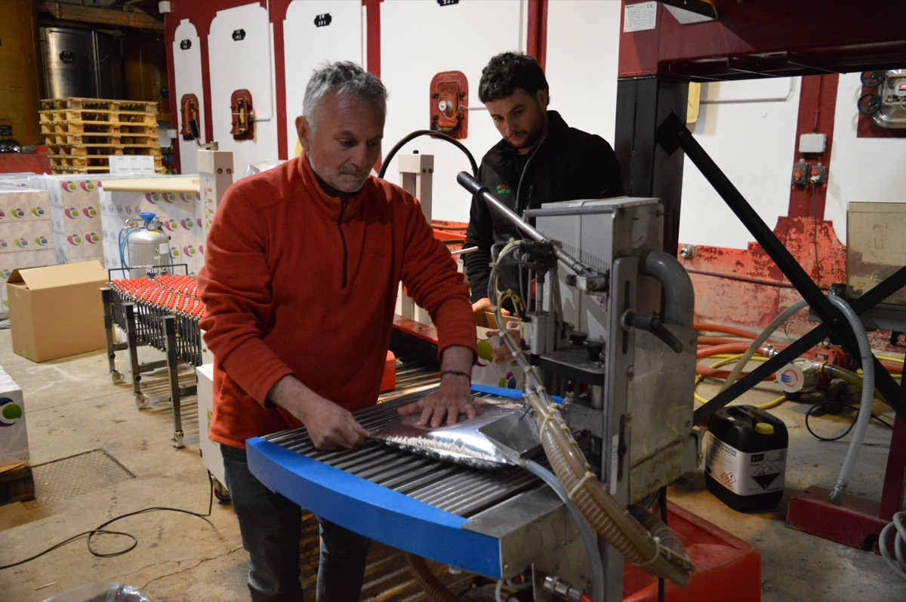
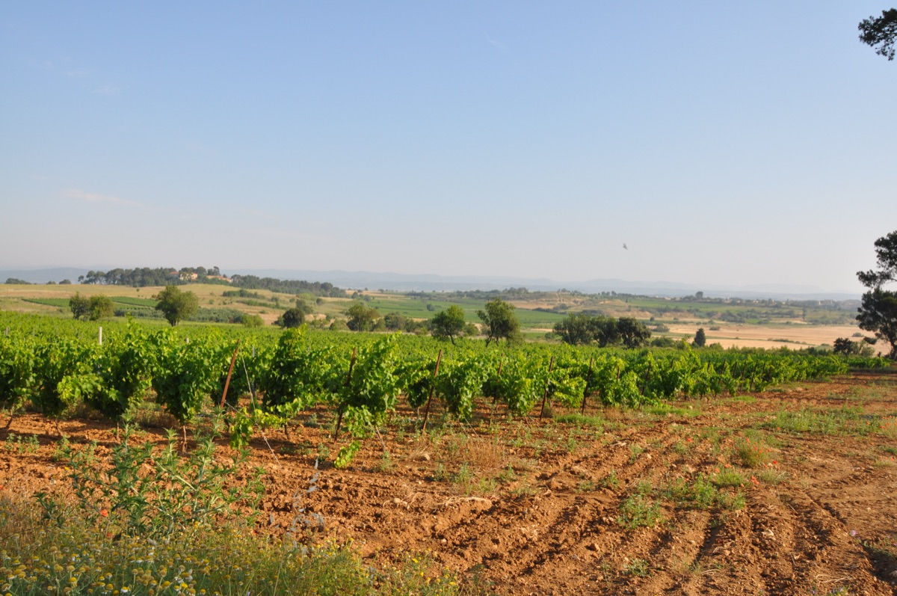
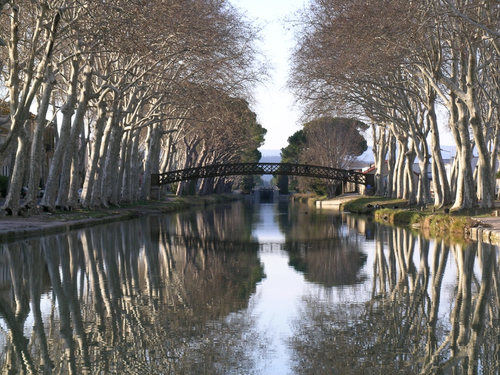
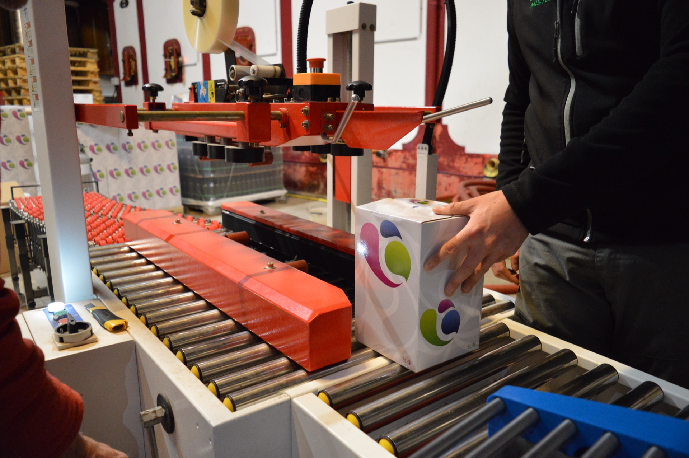

Notre histoire
Jean François Ramond et la transmission
"La vigne, ça s'apprend en regardant son père faire. Et puis un jour, on comprend qu'on sait."
Jean François Ramond dirige le Domaine des 7 Écluses avec la conviction tranquille de ceux qui ont appris leur métier sur le tas, de génération en génération. La vigne, la vinification, l'accueil, tout se transmet ici par la pratique et par la proximité.
Ce domaine familial n'a jamais cherché à impressionner. Il a cherché à être vrai. Vrai dans ses vins, vrai dans son accueil, vrai dans sa relation au territoire. C'est cette authenticité qui revient dans la bouche de tous ceux qui poussent la porte du caveau.
La transmission de père en fils n'est pas seulement une question de propriété, c'est une manière de voir le vin, le travail et les gens. Une philosophie que les visiteurs ressentent dès qu'ils arrivent.
Venir nous rencontrerNotre manière d'être
Ce qui nous guide au quotidien
L'accueil sincère
Recevoir quelqu'un au domaine, c'est lui ouvrir notre univers. On prend le temps, on répond aux questions, on ne survend rien. La visite doit se sentir vraie, pas préparée pour l'effet.
Le respect du terroir
Nos vignes sont notre héritage. On les travaille avec attention, en cherchant à exprimer ce que le sol et le climat nous donnent chaque année, sans forcer, sans surjouer.
La qualité sans prétention
Nos vins sont faits pour être bus, partagés, appréciés. Pas pour remplir une cave ou collectionner des médailles. La qualité ici, c'est le plaisir simple d'un bon verre bien mérité.
Le lien au territoire
Sallèles-d'Aude n'est pas qu'une adresse postale, c'est l'identité du domaine. Le canal, les coteaux, le village : tout ça fait partie du vin qu'on vous sert.
La transmission
Ce qui a été appris doit être transmis. Aux enfants, aux visiteurs, aux curieux. Le domaine vit parce qu'on partage ce qu'on sait et ce qu'on aime.
La patience du temps long
Un bon vin ne se fait pas dans la précipitation. Ni une bonne réputation. On travaille sur le long terme, avec constance, c'est ça, le rythme de la vigne.
Le domaine en images
La vie au domaine







Venez nous rencontrer
Rencontrez Jean François et son équipe
La meilleure façon de comprendre ce domaine, c'est de venir le voir. Visite du chai, dégustation et échange direct avec les vignerons, sur rendez-vous ou aux heures d'ouverture.
Prendre rendez-vous